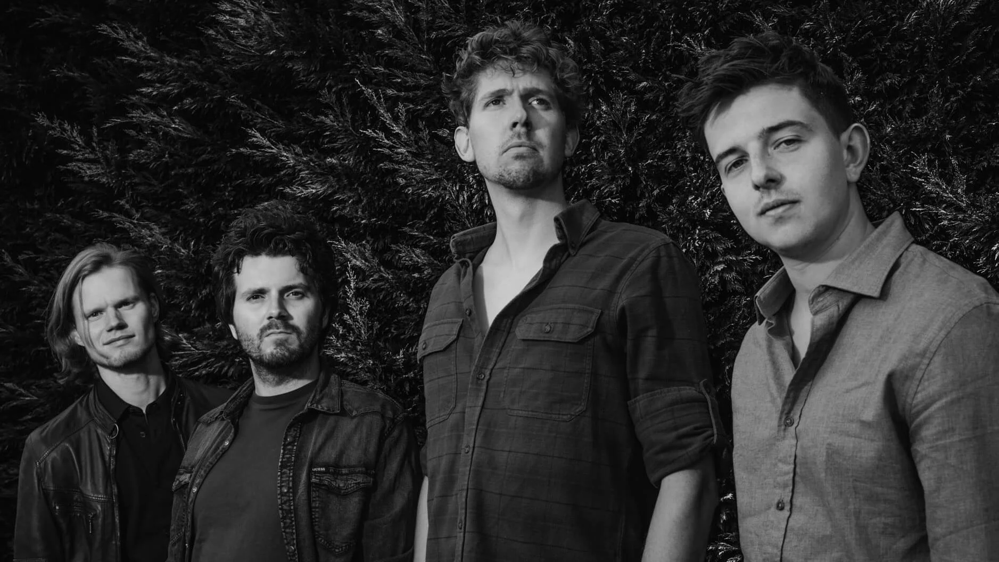
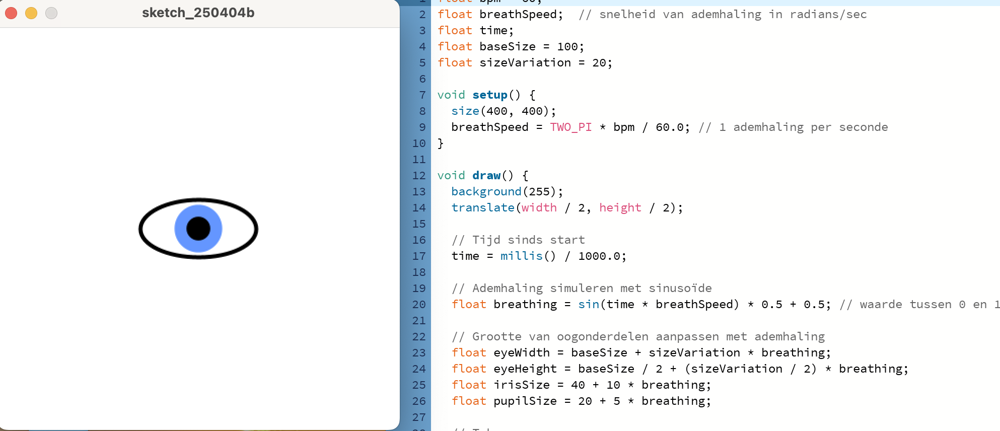
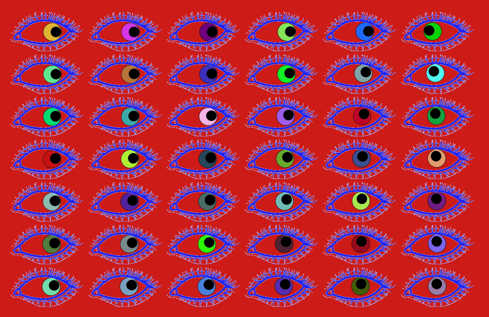

Generative Art voor live performance Band
Oriëntatie
Het project begon met het kiezen van een band en een nummer als basis voor de visuele vertaling. In mijn geval werd dit de Maastrichtse band Düüster met het nummer Cupids Blind Eye.
Door het nummer herhaaldelijk te luisteren heb ik de structuur, sfeer en dynamiek geanalyseerd. Hierbij keek ik niet alleen naar het ritme, maar ook naar spanningsopbouw, intensiteit en emotie. Dit vormde de basis voor de visuele richting van het project.

Concept & Schetsfase
Op basis van deze analyse ben ik begonnen met het ontwikkelen van visuele ideeën. In deze fase heb ik verschillende richtingen verkend door te schetsen in Illustrator en Photoshop. Het doel was om abstracte elementen zoals geluid en ritme te vertalen naar vormen, beweging en compositie. Hierbij heb ik geëxperimenteerd met contrast, herhaling en dynamiek, zodat de visuals goed aansluiten bij de energie van het nummer. Deze fase was essentieel om snel ideeën te testen en een duidelijke visuele stijl te bepalen voordat ik de stap naar code maakte.

Ontwikkeling
Na de conceptfase heb ik de visuele ideeën vertaald naar werkende generatieve systemen in Processing en p5.js. Hierbij heb ik gewerkt met real-time audio-analyse, waardoor de visuals direct reageren op de muziek.
Elementen zoals frequentie, volume en ritme werden gebruikt als input voor beweging, vorm en kleur. Het ontwikkelen van deze systemen vroeg om een iteratief proces: testen, aanpassen en verfijnen. Zo ontstonden visuals die niet alleen technisch werkten, maar ook visueel in balans waren met de muziek.
Interactie & Live Performance
In de laatste fase heb ik de visuals gekoppeld aan een Arduino, waardoor externe input kon worden toegevoegd tijdens het optreden. Dit maakte het mogelijk om de visuals nog dynamischer en interactiever te maken in een live setting. Tijdens het optreden vormden de visuals een directe reactie op zowel de muziek als de live input. Dit zorgde voor een sterkere wisselwerking tussen beeld en geluid, en creëerde een immersieve ervaring voor het publiek. Hier werd duidelijk hoe belangrijk timing, stabiliteit en samenwerking zijn binnen een live performance.
Reflectie
Dit project gaf mij inzicht in het ontwerpen van generatieve systemen en het werken met real-time data. Ik heb geleerd hoe je abstracte input, zoals geluid en ritme, kunt vertalen naar visuele output die daadwerkelijk iets toevoegt aan een performance.
Daarnaast liet het project zien hoe belangrijk het is om concept, techniek en uitvoering op elkaar af te stemmen. Niet alleen het idee, maar juist de vertaalslag naar een werkend systeem bepaalt de kwaliteit van het eindresultaat.
